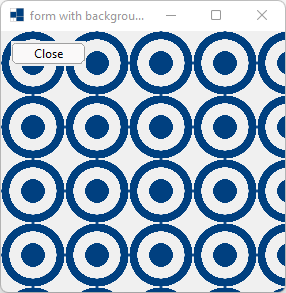
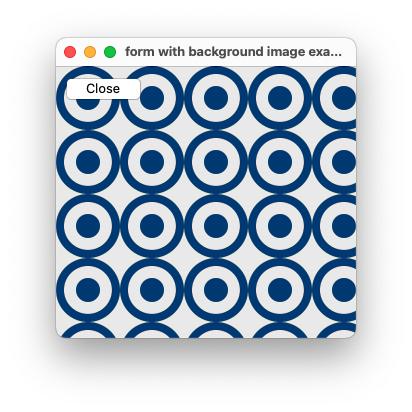
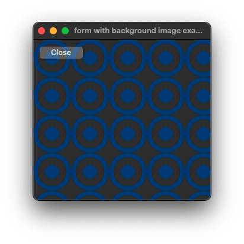
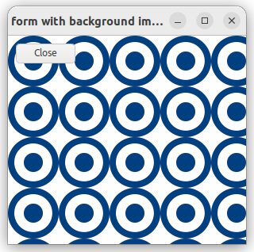
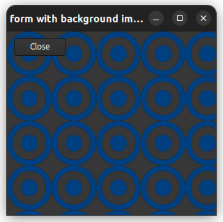

|
xtd
0.2.0
|
form_background_image.cpp
demonstrates how to use of xtd::forms::form control with background_image.
- Windows
- 

- macOS
- 

- Gnome
- 

#include <xtd/forms/application>
#include <xtd/forms/button>
#include <xtd/forms/form>
#include <xtd/forms/images>
#include <xtd/startup>
using namespace xtd;
using namespace xtd::drawing;
using namespace xtd::forms;
namespace form_background_image_example {
public:
static auto main() {
application::run(form_main());
}
form_main() {
double_buffered(true);
background_image(images::from_name("xtd", drawing::size(64, 64)));
text("form with background image example");
button.parent(*this);
button.text("Close");
button.location({10, 10});
}
private:
};
}
startup_(form_background_image_example::form_main::main);
generic_event_handler<> event_handler
Represents the method that will handle an event that has no event data.
Definition: event_handler.h:32
#define startup_(main_method)
Defines the entry point to be called when the application loads. Generally this is set either to the ...
Definition: startup.h:162
xtd::forms::style_sheets::control button
The buttton data allows you to specify the box of a button control.
Definition: button.h:23
xtd::forms::style_sheets::control form
The form data allows you to specify the box of a form control.
Definition: form.h:21
@ text
The xtd::forms::status_bar_panel displays text in the standard font.
The xtd::drawing namespace provides access to GDI+ basic graphics functionality. More advanced functi...
Definition: actions_system_images.h:11
The xtd::forms namespace contains classes for creating Windows-based applications that take full adva...
Definition: about_box.h:13
The xtd namespace contains all fundamental classes to access Hardware, Os, System,...
Definition: system_report.h:17
Generated on Sun Oct 1 2023 07:46:01 for xtd by Gammasoft. All rights reserved.